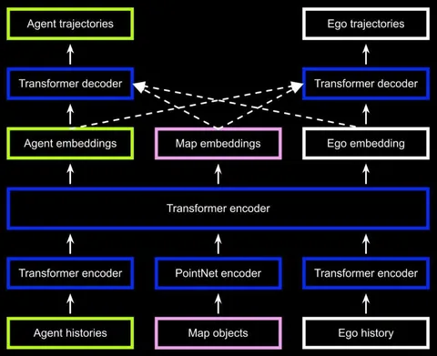

Трансформеры уже умеют писать код, генерировать тексты и рисовать картины. Сегодня разберём нашу статью о том, как в Яндексе используют архитектуры на основе трансформеров для планирования движения и почему это сильно отличается от привычных задач генеративных моделей.
Любая система автономного движения опирается на модуль Motion Planner — алгоритм, который несколько раз в секунду решает, куда должен переместиться робот или автономный автомобиль. То есть превращает их восприятие мира в конкретные действия: руление, торможение, ускорение.
В индустрии популярны два подхода к построению Motion Planner: классический, с разделением на perception и planning, и end-to-end, когда модель получает на вход сырые данные сенсоров и сразу выдаёт управляющие действия, без промежуточной стадии perception.
Мы в Яндексе используем классический подход. Формально перед нами задача sequence-to-sequence: на вход приходят временные последовательности стейтов, и нам нужно предсказать будущие стейты. Для решения используем трансформеры.
На выходе этого блока получается три вида эмбеддингов: агентов, карты и эго.
Всё, что описано выше, — лишь часть большой системы. Внутренние детали токенизации или точный формат выходов сегодня не разбираем. А больше подробностей об обучении ищите в статье на Хабре.
Разбор подготовил
404 driver not found
